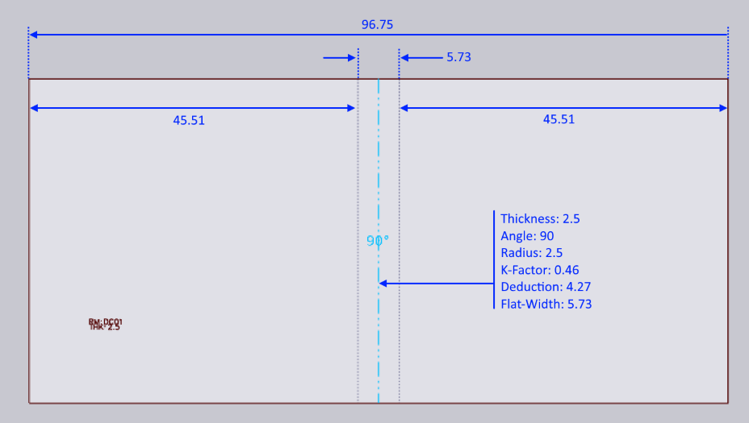

The Adapt Geometry feature
This document explains the three different process options available with the Adapt Geometry feature:

The Adapt Geometry function is called upon when the input part does not match the actual process conditions. One or both of these problems may exist with the part:
-
The inner radius of the bends may be too small. Each process (like panel-bending, or press-brake air-bending) will have minimum inner radius that is possible with that process. If the design radius of the part is smaller than this, the part cannot be manufactured as designed; the radius will need to be changed.
-
The K-factor of the bend line may be incorrect. The process machine (panel-bender vs press-brake) and the process tools or conditions (punch/die/folding blade/air-gap) all combine to dictate what the actual K-factor of the bend will be. The bend may be designed with a different K factor.[1]
Let us take a simple 2-D part that has both an incorrect radius and an incorrect K-factor, and see how the Adapt Geometry function modifies this part.

The input 2D part is shown above - it is a simple rectangle with one bend-line exactly down the middle. The part width is 96.75 mm. Material thickness is 2.5 mm.
The bend line has been designed with an inner radius of 0.5, and a K-factor of 0.5. The flat-width (length of the neutral line) is therefore:
angle * (innerRadius + kFactor * thickness) = PI/2 * (0.5 + 0.5 * 2.5) = 2.75 mm
Since this is a 90 degree bend, the bend deduction is simply:
2 * thickness - flatWidth = 2 * 3 - 2.75 = 3.25 mm
Don’t Change Anything
When folded up without any Adapt Geometry processing, this therefore creates a part with these dimensions:

This is also exactly the result we get with the option Don’t Change Anything. Neither the K-factor nor the radius were changed, resulting in a 3D part that matches exactly the design intent of the 2D drawing. If this is set for manufacturing, the resulting manufactured part will not actually match these dimensions, mainly because the bend produced on the machine will vary both in radius and effective K-factor than the bend that was designed. In this case, you will end up with a part that is a bit smaller than 50x50 after manufacturing.
Retain Flat Size
If this option is chosen, TecZone will keep the flat’s size unchanged, but will annotate the bend lines with the correct bend radius and K-factor. Let us assume that the correct bend radius is 2.5mm and the K-Factor is 0.46 mm. The part would now first be changed internally to this:

Note how the overall part size is unchanged (still 96.75 mm), and the position of the bend line is unchanged. However, the bend is now of radius 2.5, and K-factor 0.46, which means the bend’s flat width has increased to 5.73. This is now folded up to result in the following:

As you can see, the 2D dimension of the part is unchanged, but the 3-D dimension has changed to 50.51 x 50.51 (from the initial design dimension of 50 x 50).
Retain 3-D Dimension
If this option is chosen, the part’s 3D dimension is unchanged, but since the bend radii and K-factors are changed, the unfolded part will change. When starting with a 2-D flat (as in this example), TecZone follows the following steps.
-
Fold the model to 3D, using the initial design intent of radius and K-Factor. This will result in a 3D model that looks identical to the one in Figure 2.
-
Now, change the radius to the target radius of 2.5mm and the K-factor to the target of 0.46. This will result in a 3D model like the one below:

-
This model is then unfolded (using a K-factor of 0.46 for the bend) to result in the following flat:

With this option, the 3D dimension is retained at the design dimension of 50x50. The unfolded part width has changed from 96.75 to 95.73 mm.
Summary
-
If the flat has not yet been produced, the best option is typically Retain 3-D Dimension
-
If the flat has been produced and cannot be modified, the best option is Retain Flat Size
Both these options will result in parts where the final manufactured result should match the 3D data as seen in the TecZone window. In contrast, the Don’t Change Anything option will result in a final manufactured part that will not match the 3D data seen in TecZone, since the actual bend radii and K-factors are not modeled correctly in the design.